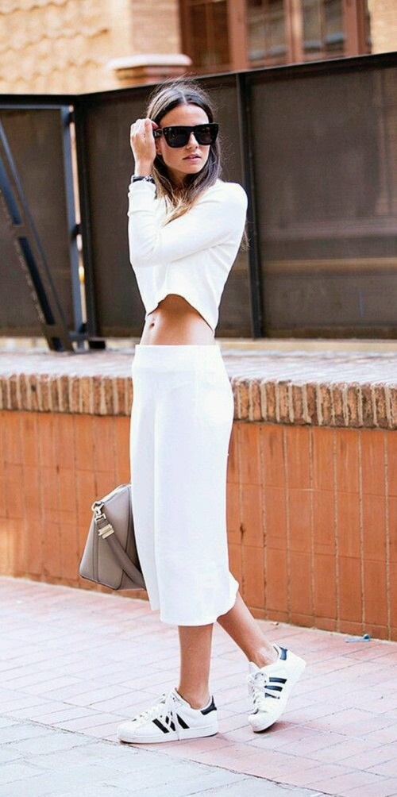

El sporty chic es la nueva tendencia en moda. La clave de este nuevo estilo es que los looks son aparentemente outfits chics, pero para darle el toque característico y de contraste, se añade una prenda deportiva como un top, una polera o calzado deportivo, como zapatillas de running.
Combina de forma entretenida lo formal/elegante y lo deportivo. Hay muchas fórmulas lograrlo, pero las protagonistas siempre serán las zapatillas. Puedes combinarlas prácticamente con todo: vestidos, faldas, shorts, pantalones, enteritos, entre otros.
Para elegir las zapatillas ideales, lo mejor es optar por un modelo altamente combinable. Si tienes el presupuesto para comprar más de un par, puedes elegir también diseños coloridos e ir variando. Si sólo compras sólo uno, elige colores neutros.
Las zapatillas totalmente blancas se han convertido en un accesorio infalible desde hace un tiempo. Sin embargo, puedes optar por los tonos fosforescentes si eres más jugada.
Los complementos aportan el toque final al look sporty chic. Collares, pulseras, y anteojos de sol añadirán un toque más femenino y cuidado a este estilo. Lo mejor es escapar de todos los complementos de estilo deportivo, ya que lo importante en esta tendencia es la prenda sport.
